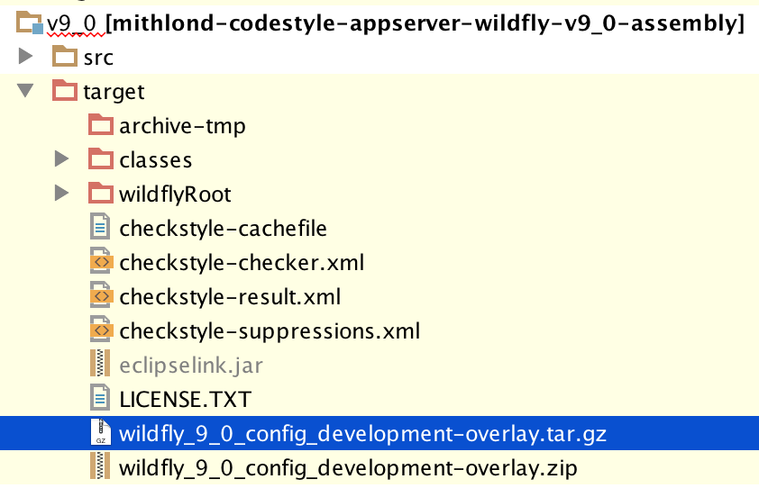
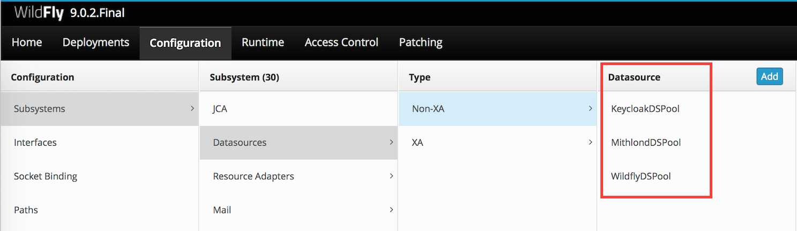

About Wildfly
The Mithlond development environment is self-sustained and should be fully installable on a local development machine. The Wildfly application server is modern and sports powerful mechanics to simplify Java EE development.
Installing and setting up Wildfly
Installing a development environment for Wildfly is simple, and has been made even simpler with the addition of a configuration overlay assembled during the build of this reactor.
1. Download the Wildfly 9+ app server
Download a full distribution release. The current latest release is version 9.0.0.Final which implements the Java EE 7 standard.
2. Install WildFly in a path without whitespace.
The Wildfly installation home directory (called WILDFLY_HOME below) should be something like /Users/yourUserName/AppServers/wildfly for Linux/Mac OS X operating systems, and C:\Applications\wildfly for the windows operating system. When you have installed Wildfly, ensure that the directory WILDFLY_HOME/bin is in your path, implying that you can launch Wildfly commands directly from the command line.
3. Build the Wildfly configuration overlay
The Wildfly application server requires some configuration before being able to run properly. This configuration is partly found within XML files and partly within the modules subdirectory of the application server. To simplify things, this type of application server configuration is built to an assembly by the project mithlond-codestyle-appserver-wildfly-v9_0-assembly (use either tar.gz or zip version as per your own preference):

The overlay should be extracted in the WILDFLY_HOME directory when the server is shut down. Since Wildfly application server re-writes its configuration data when the server is shut down, it will overwrite any configuration written to any of its configuration files when the server is running. Hence the need to unpack the overlay archive when the server is shut down.
NOTE!
The overlay requires the JipiJapa integration library for EclipseLink. This dependency is not published in the global Maven repository, but instead in JBoss 3rd Party releases repository. This means that you must add this repo to your list of standard repositories within your maven settings.xml file.
If you use a local repo cache, such as Archiva, JFrog or Nexus you should instead add the extra repository to your repo cache. The repo URL is:
http://repository.jboss.org/nexus/content/repositories/thirdparty-releases.
4. Launch the server; verify Datasources “MithlondDS” and “KeycloakDS”
Start the application server using the command standalone.sh or standalone.bat depending on your operating system. In the console log, you should see a log line about Wildfly picking up the something like
[org.jboss.as.connector.subsystems.datasources] (MSC service thread 1-2) WFLYJCA0001: Bound data source [java:jboss/datasources/KeycloakDS] [org.jboss.as.connector.subsystems.datasources] (MSC service thread 1-4) WFLYJCA0001: Bound data source [java:jboss/datasources/WildflyDS] [org.jboss.as.connector.subsystems.datasources] (MSC service thread 1-6) WFLYJCA0001: Bound data source [java:jboss/datasources/MithlondDS]
If you’re running on Windows and get an error Failed to start the http-interface service it might be the management service using the same port as for example NVIDIA Network Service. If this happens you need to stop that service before starting wildfly, change the management port of wildfly or change the port of NVidia service.
Open the management console on your local development machine, and navigate to the DataSources pane, which can be found on the URL http://localhost:9990/console/App.html. Click on the Configuration tab, and select Subsystems | Datasources | NonXA to validate the 3 data sources KeycloakDS, MithlondDS and WildflyDS. To access the management console in the development environment, use user name and password from the file ACCESS.txt.

The Development environment Wildfly Application Server should now be fully set up.